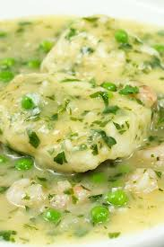

27.Tabasco

- Platillo: Pecado en verde
- Ingredientes: Pescado de río (róbalo o mojarra), epazote, masa, tomate verde, chile, achiote.
- Historia: Platillo típico de la cultura chontal, aprovechando ingredientes locales y prehispánicos.
- Dato curioso: Se llama así por el color verde brillante de su salsa, hecha con hierbas y masa.